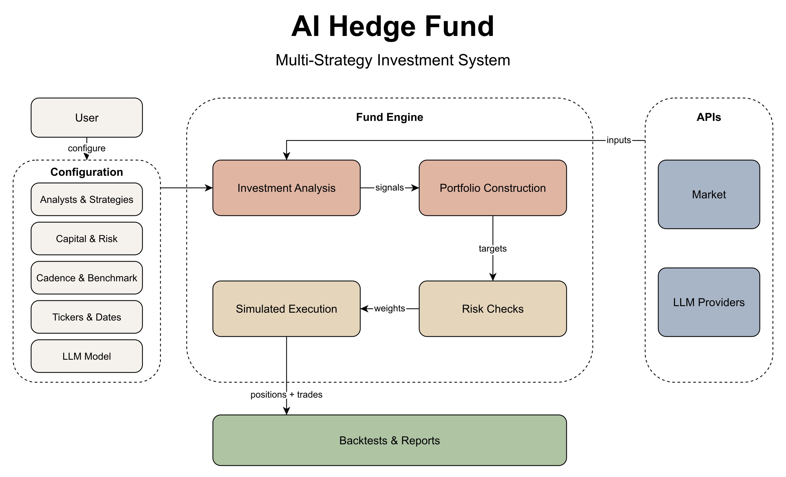
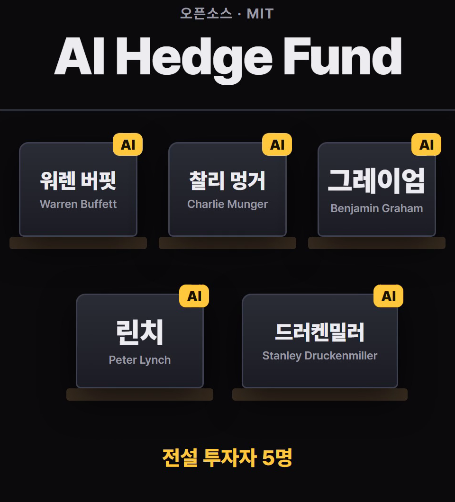
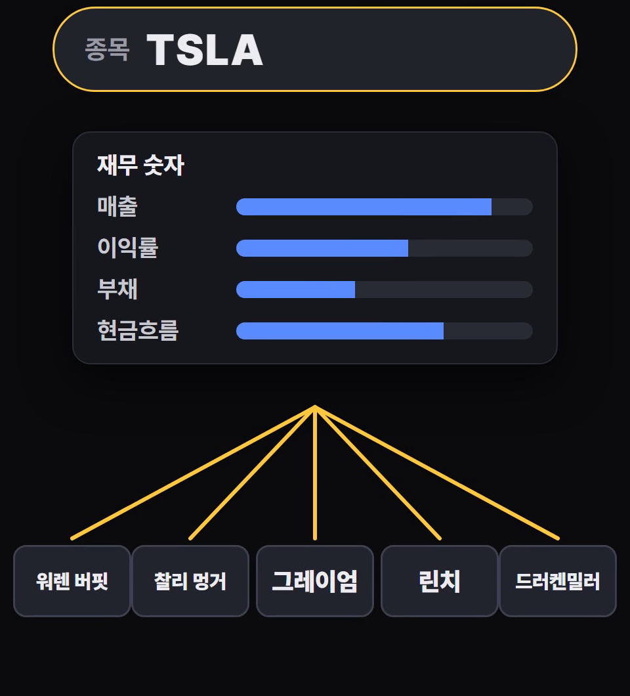
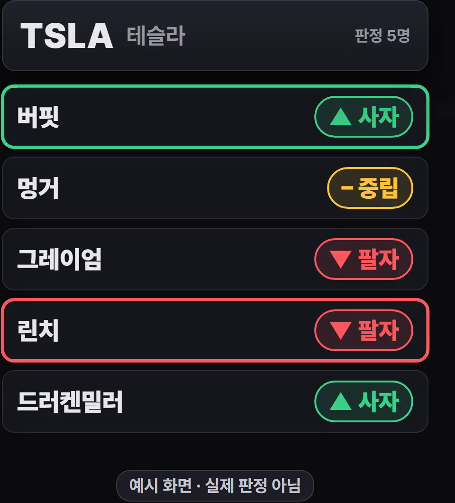
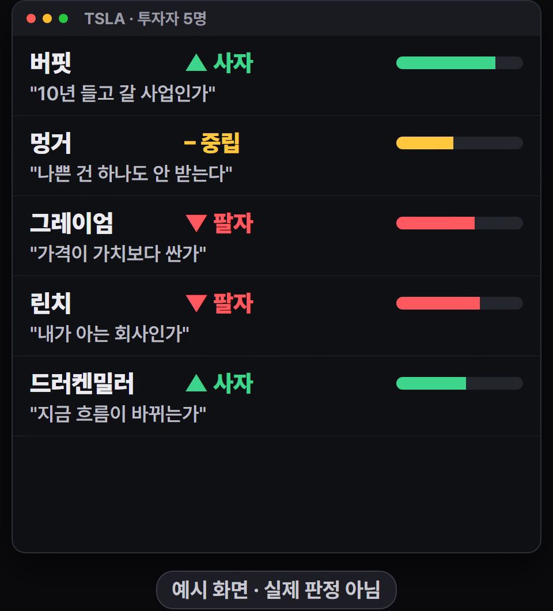

종목을 넣으면 버핏·멍거·그레이엄·린치·드러켄밀러, 다섯 투자자의 방식으로 만든 AI가 각자 '사자·팔자·중립'과 확신도, 이유를 내놓는 오픈소스(MIT)예요. 의견을 합쳐 가짜 돈으로 모의 투자를 하거나, 과거로 되돌려 볼 수도 있어요. 실제 주문은 넣지 않는 교육용이에요. 이 정리본은 공식 설치 문서(깃허브 README, 11/8 확인) 기준이에요. 아래 판정 그림은 이해를 돕는 예시 화면이고, 실제 판정이 아니에요.
터미널에서 `pipx install aihf`를 실행해요(uv를 쓰면 `uv tool install aihf`). 그다음 어느 폴더에서든 `aihf`만 치면 앱이 켜져요.

처음 실행할 때 앱이 필요한 키를 물어보고 `~/.hedge-fund/.env`(윈도우는 C:\Users\<내 이름>\.hedge-fund\.env)에 저장해요. 미리 넣어 두고 싶으면 아래 '복사해서 쓰기'의 줄을 그 파일에 붙여 넣어요. 터미널에 직접 넣은 키가 파일보다 먼저 쓰여요.
앱 첫 화면에서 새 펀드를 만들면 이름 → 전략 → 시작 금액 → 거래 주기(→ 모의 투자면 종목) 순서로 물어요. 전략마다 들어 있는 투자자가 달라요: Fundamental L/S = 다섯 명 전부 · Deep Value = 그레이엄·버핏·멍거 · Inflections = 드러켄밀러·린치. 'Build your own'으로 투자자를 직접 고를 수도 있어요. 종목은 기본 목록(AAPL·MSFT·NVDA·GOOGL·AMZN·META·TSLA·JPM·UNH·XOM)에서 고르거나 직접 적어요.

다섯 명은 같은 재무 숫자(그날까지 공시된 매출·이익률·부채·현금흐름 등)를 받아요. 그 숫자로만 판단하고 숫자를 지어내지 말라는 규칙이 들어 있어요. 자료가 모자라면 중립이나 기권으로 나와요.

실행하면 한 줄에 한 명씩, 판정(▲사자·▼팔자·–중립)이 먼저 뜨고 확신도(0~100%)와 이유가 2~4문장으로 이어서 채워져요. 같은 종목에 두 사람이 반대로 말하는 걸 한눈에 보라고 만든 화면이에요(공식 코드 설명). 줄을 고르면 그 사람의 이유 전문이 열려요.


Paper trading: 실제 장날 기준, 가짜 돈 장부로 굴려요. 실행 전에 이번에 할 일을 보여 주는 승인 단계가 있고, h/r 키로 멈추고 다시 켤 수 있어요. Backtesting: 과거 기간을 다시 돌려 수익 곡선을 기준 지수와 비교해요. 판정을 비중으로 바꾸고 주문을 정하는 건 정해진 계산식이 하고, AI는 의견만 내요.
터미널에서 한 번
pipx install aihf
설치 뒤 언제든
aihf
~/.hedge-fund/.env에 붙여 넣고 값만 바꾸기 — AI 키는 쓰는 회사 것 하나만
FINANCIAL_DATASETS_API_KEY=여기에-금융자료-키 ANTHROPIC_API_KEY=여기에-AI-키
금융 자료 키 대신 x402
pipx install 'aihf[x402]'
도움이 되셨다면
@ai.antenna.kr
에서 바로 쓰는 AI 활용법을 계속 올립니다.